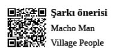

Sonuç odaklı olmadığı ve verimli yönetilmediği sürece; toplantılar, iş dünyasının en büyük zaman ve algı kayıpları.
Bir de yaşadığınız toplumun kültürel altyapısı, sohbet, muhabbet, dedikodu ortamına müsaitse toplantıda geyiğin tadından yenmez. Toplantı süreci, sonuç odaklı, verimli toplantılardan geyik odaklı toplantılara çevrilir.
Toplantıya katılmak, sürekli toplantısı olmak, toplantıdan toplantıya koşmaktan yemek bile yiyememek önemli bir statü sembolüdür.
Toplantı frekansının ve gündeminin yoğunluğu ile boğuşurken toplantı profesyonellerinin içlerinden gelen bir ses; “Güzelim sen gerçekten yoğun ve önemli bir hatunsun, sürekli toplantı halindesin, insanlar senden toplantı alabilmek için uğraşıyorlar, hâkimsin” söylemlerini fısıldamaktadır. Bu fısıldama, profesyonel insanların normalini yakalama, kendini topraklama, vicdanını şahit gösterip kendini temiz hissetme olayının gizli öznesidir.
Toplantı Aksesuarları
Toplantı profesyonelleri, toplantılara belli donanımları olmadan çıkmazlar. Toplantı profesyonellerinin sık görülen günlük aksesuarları:
Profesyonel Defter: Toplantıya elinde harita metot defter, şirketin yılbaşında verdiği ajanda, çakma Moleskine, altında çalışanın defterinden koparılmış A4 kâğıt veya kese kâğıdı ile gelmek; üst yönetim sunumunda video açarken miki filmi çıkmasından farksızdır.
Özellikle kara kaplı (business) veya özgün bir kap tasarımına, rengine, mesajına sahip, kolay bulunmayan (yurtdışından aldım diyaloğunu tetikleyecek) bir defter olması gerekir. Defterin sayfaları çizgisiz olmalıdır. Çizgili defter kullanmak, “Yönetici olmuş hâlâ çizgisiz cetvelsiz doğru düzgün yazamıyor” imajı verebileceğinden genellikle tercih çizgisizden yana olur. Bulunamazsa, kareli bir yere kadar idare edebilir. Çakma defter markası kullanmak, yarısı çözülmüş çengel bulmacaya toplantı notu almaktan farksızdır.
Toplantı başlangıcında deftere tarih, toplantı adı ve katılımcıları yazmak profesyonelliği ifade eder. Hatta toplantı katılımcılarının masanın neresinde oturduğunu gösteren küçük bir çizim, ilgili toplantı profesyonelinin algısını Nirvana’ya yükseltir.
Havalı Bir Kalem: Toplantı esnasında tüm katılımcıların itina ile gözüne sokulmasına rağmen, kendisiyle sadece çok önemli birkaç satır yazılır. Böylece insanlar, sizin ne kadar zeki olduğunuzu, her şeyi anladığınızı ve özet olarak bir iki cümle yazdığınızı düşünür. Toplantı katılımcılarından kalemi fark etmeyenler için kalemin mürekkebine bakılır, açılır içi çıkarılır vs. Böylece herkes kalemi tüm özellikleri ile gözlemleyebilmiş ve ilgili arka plan diyalogları tetiklenmiş olur.
Özgün Kartvizit Kabı: Profesyonel hayatın bölüm sonu canavarını tek jeton ile geçebilme imkânı sağlayan kartvizitler, profesyonelliğe yakışır bir şekilde gümüş, deri, at kılı, fok tüyü vb malzemelerden yapılma kartvizit kaplarında özenle saklanmalıdır. Toplantı esnasında; kartvizit, özenle seçilmiş kartvizitlikten nazikçe çıkarılır, istense de istenmese de her karşılaşılan kişiye verilir. Burada, “Ulan ben de işte bu pozisyonda bu şirkette çalışıyorum, saksı değilim, beni buna göre konumlandır” mesajı verildiği gayet iyi bilinir.
Toplantı masasına dirsekleri koyunca, ceketin arasından itina ile çıkan gömlek kollarında büyük bir ihtişam ile ‘Ben buradayım’ diyen kol düğmeleri: Kol düğmesi, profesyonelliğin en katma değerli göstergelerinden biridir. Eğer kol düğmesi takıyorsanız “İşinize özen gösteriyorsunuz, yönetici iseniz bu pozisyonu hak ediyorsunuz değilseniz üç vakte kadar yönetici olacaksınız ve / veya daha fazla direct report’unuz olacak, daha fazla bütçe yöneteceksiniz” imajını verir.
Kol düğmelerinin fark edilmesi için dirsekler özenle masaya koyulur, ceket sıvanır ve kol düğmeleri katılımcıların gözüne sokulur. Kol düğmelerinin lansman sürecinde gömlek manşetlerinde yer alan isim baş harflerini de entegre bir şekilde gösterebilmek büyük takdir toplar.
Cep Telefonu: Profesyonel bir telefon, gücün, toplantı masasındaki göz kamaştırıcı yansımasıdır. Bu aksesuarlar toplantı masasının altında etkin kullanılmaları ile ünlüdür, üst tarafta duruma göre pazar payları üzerine öngörüler, Tarkovski’ye göndermeler havada uçuşurken masanın altında enseye tokat yağlı güreş tutulur. Eğer üst düzey yönetici iseniz toplantı masasının üzerinde de çatır çatır bu cihazlarla oynaşabilirsiniz. Genellikle sıkıcı toplantıların vazgeçilmez can simitleridir. Email’lere bakılır. Cevap yazılır. Tweet atılır. Instagram’a “Balık tutan İstanbul’lu, Bebek” fotosu yüklenir. Facebook’ta adam pokelenir. Twitter’a @surada, “Bilmem ne toplantısındayım” yazılır. Gündemden detaylar paylaşılır. “Bakın biz ne mevzularla uğraşıyor, kimlerle oturup kalkıyoruz ulan, ne büyük adamlarız” mesajı verilir. Instagram’da like yapılır, biriken şekilli tatil fotoları post-prodüksiyona tabi tutularak anılar canlandırılır, gelen like’larla gönüller okşanır. Foursquare’de check-in olunur ve toplantı odasının, şirketin, mahallenin muhtarı olunmaya çalışılır. Görüldüğü gibi bu araçlar, sıkıcı geçen bir toplantıyı Alice’in harikalar dünyasına dönüştürebilmektedir.
Tablet: Profesyonel yönetici toplantı esnasında aldığı iki satır notu da mini iPad’in standart not uygulamasından ziyade özel Meeting Minutes, Evernote gibi programlarda alarak, “Mini iPad’i bile herkesin kullandığı gibi Angry Birds düzeyinde kullanmıyor. Adam verimlilik olayını çözmüş, paperless olmuş” mesajını verir.
Toplantı Süreci
Toplantı süreci, “Damda yer alan sarkıtlar ile gözyaşı korelasyonu ile ilgili toplanmamız lazım” diyaloğundan sonra toplantı davetiyeleri meeting request’lerin gönderilmesi ile başlar. Ofiste iPhone popülasyonu yoğunlukta ise gelen toplantı davetlerinin aynı mekândaki iPhone’ların zillerine basıvermesiyle bir anda halay, şenlik, radyoaktif serpinti anonsu havası oluşur. Kafalar bir anlığına kalkar, eller cihazlara uzanır, uzman-uzman yardımcısı-ABM (Assistant Brand Manager) tayfası için “Ulan yine kimin dümenine su yürütecez” içsesleri eşliğinde toplantı davetleri alınır.
Meeting request göndermek, meeting request gelince accept etmek, hatta artistlik yapıp tentative demek veya meeting request’i forward etmek, calendar paylaşmamak, “Arasın, takvimimi öğrensin” demek, toplantı profesyonellerinin çok hoşlaştığı hareketlerdendir. Bununla birlikte gelen davete tentative cevabı dönmek belli bir seviyenin altı çalışan için mülakatta “Biraz kendinizden bahseder misiniz?” sorusuna kütür kütür geğirerek konuşmaya çalışıp cevap vermekten farksızdır.
Profesyonel yönetici, toplantıya davetli herkesin, an itibariyle geldiği bilgisinin sekreteri tarafından teyit edilmesini müteakip toplantıya katılır. Amele gibi toplantı salonuna zamanında gidip herkes gelene kadar kendinden düşük pozisyonlardaki insanlarla iş dışı sohbetlere maruz kalmak, parmak arası terlik ile sunum yapmaktan farksızdır. Toplantıya geç giden her zaman daha şekildir. Bu durumun eşdüzey profesyoneller arasında geçerli olduğu bilinmelidir. Direktör, kürektör, koğuş ağası, oymakbaşı gibi üst düzeylerin bulunacağı toplantılara şekil olmak için geç katılmak asker içtimasına komutandan sonra gelmekle aynı kapıya çıkmaktadır. Denenmemelidir.
Girer girmez “Daha önce penguenlere türev kullanmadan limit almayı özümsetme toplantısındaydım şimdi bitti ancak gelebildim” deyip özür dilenir. Bu özür, egoları öyle ince bir açıdan görmektedir ki, esasen altında yatan sürekli estağfurullah çekerken gelecek tebessüm ve kaymaklı taltifleri ruhuna güzelce yedirme sanatıdır.
Burada “Ulan bu adam da ne yoğun, sürekli toplantıda, çok önemli bir adam olsa gerek, yönetim de önemsiyor, geniş takılıyor” imajı en ince ayarla, itinayla verilir.
Toplantı gündemi daha önceden gönderilmiş olmasına rağmen, “Naber abi nasıl gidiyor, şunu ne yaptınız?” diyalogları toplantı süresinin yüzde 38’ni oluşturmaktadır. (Bu rakamın yerine canınız ne istiyorsa yazabilirsiniz.)
Toplantı gündeminin üzerinden bir iki madde ilerledikten sonra herkesin kendi bilinçaltındaki gündem su yüzüne çıkmaya başlar ve herkes toplantıyı bu gündeme göre yönlendirmek ister.
Toplantıyı yöneten kişi baskın karakterde ise buna izin vermez, toplantı süresinin yüzde 71’inde kendisi konuşur. (Buradaki sayısal bilgi tamamen uydurmacadır.)
Toplantıyı yöneten kişi eğer pasif karakterde ise herkes kendi gündemini konuşur, toplantı uzar, uzar ve uzar... Herhangi bir sonuç çıkmaz. Toplantıya katılan ekipler içinde irili ufaklı iç ekipler oluşmaya, grup kendi arasında konuşmaya başlar. DM’den, Whats App’tan, BBM’den birbirlerine yürürler.
Toplantıda herhangi bir katılımcı herhangi bir konu hakkında yaptıklarını anlatırken, o katılımcıya laf sokmak çok profesyonel ve zeki havası verir. Laf sokanın seviyesine inmeyip cevap vermemek eziklik olarak addedilir. Bunlar çok plase numaradan olup, “Beldeki silah çekildiğinde sıkılır, sıkılmadan bele konan silah adamı harcatır” düsturuna işaret eder.
Toplantı platformlarında etkin performansta dalaşabilmek için katılımcılar toplantı öncesi birbirleri hakkında anlamlı argümanlar oluştururlar, deliller toplarlar. Delil bazlı, rakam bazlı, rapor bazlı laf sokmak ilgili toplantı profesyonelini amudi olarak yükseltir. Böyle bir taarruza maruz kalmak karşı taraf için 90+4’te yenen beraberlik veya mağlubiyet golünden farksızdır.
Toplantı esnasında içecekler sorulduğunda kahve (mümkünse filtre kahve veya espresso) içmek çok profesyonel durur. (Irgat gibi limonata, ince belli çay, şıra, şalgam içilmez.)
Toplantı esnasında ortaya konulmuş yiyeceklere sürekli dalmak imajı zedeleyebilir. Bunun yerine tabağa hiç dokunmadan “Ben böyle şeyleri önemsemem, 3-5 cookie’ye tav olacak insan değilim, sağlıklı beslenirim, nefsime hâkimim” imajı verilir. Çok nadiren, ortamın gerilen havasını yumuşatan adam olmak ve böylece Birleşmiş Milletler Genel Sekreteri karizmasına yürümek fırsatlarında, arabulucu konuşmasının akabinde bir adet cookie alınıp arada götürülebilir.
Challenge adı altında konuşulanlara bok atmak, farklı olmak adına mutlaka alternatif bir şeyler söylemek, özgün ve profesyonel düşünce yapısını ortaya koyar.
Toplantı sürecinde usulen herkesin görüşünü sormak çok profesyonel bir davranıştır. Ama daha profesyonel olanı tüm bu görüşleri aldıktan sonra yine kendi görüşü doğrultusunda aksiyon alınmasını sağlamaktır.
Toplantı sonunda konuşulanları maddeler halinde özetlemek: “1. Yalnız güneş şahitti, 2. Herkes kendine yakışanı giyer. 3. Farklı neler yapabiliriz? 4. Kaynaklarımızı nasıl verimli kullanabiliriz? 5. Yeterince mass’e gidebiliyor muyuz?” ve “Sizler saatlerdir hayvan gibi çenenizi yoruyorsunuz ama ben mevzuyu 5 maddede özetliyorum, çok iyiyim” mesajını vermek çok profesyoneldir.
Toplantı notunu kimin tutacağı önemli bir husustur. Konuyu herkes birine delege etmeye çalışır. Ancak başkan konuyu birine delege ettiğinde, ilgili kişi küfrederek toplantı notunu tutar ve herkese gönderir.
Gönderilen toplantı notlarını okumamak çok profesyonel ve cool bir davranıştır. Nasılsa ilgili arkadaşlar bu toplantı notunu bu kişilere bir şekilde anlatacaklardır.
Toplantı çıkışında, toplantıda kıl olunan adamlara toplantıda konuşulanlardan örnekler vererek bok atmak, kendilerinin işten anlamadığını, tesadüfen burada olduklarını vurgulamak ve kendileri hakkında kulis yapmak şampiyonluğa giden yolda önemli bir adımdır.
Memleketimiz bir toplantı ülkesi olduğundan iş dünyamız da toplantı odaklı bir iş dünyasıdır. Bizdeki toplantılar ise genellikle muhabbet odaklı toplantılardır. Osmanlı’dan günümüze loncalarda, kıraathanelerde toplanmaya, sohbet etmeye alışkın kültürel mirasımız geçmişteki araçların postmodern halleriyle iş dünyası toplantı masalarında da bu alışkanlığını devam ettirmektedir. Bize de aksesuarlarımızı yüklenip toplantıdan toplantıya koşmak kalır. Koş beyaz yakalı koş...